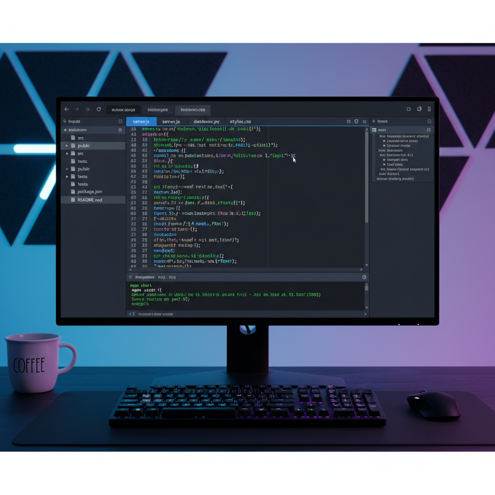
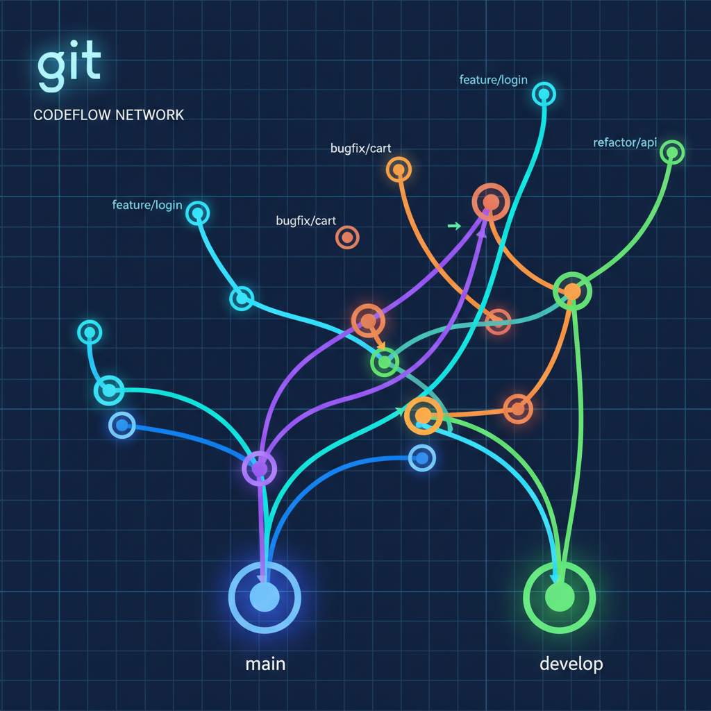
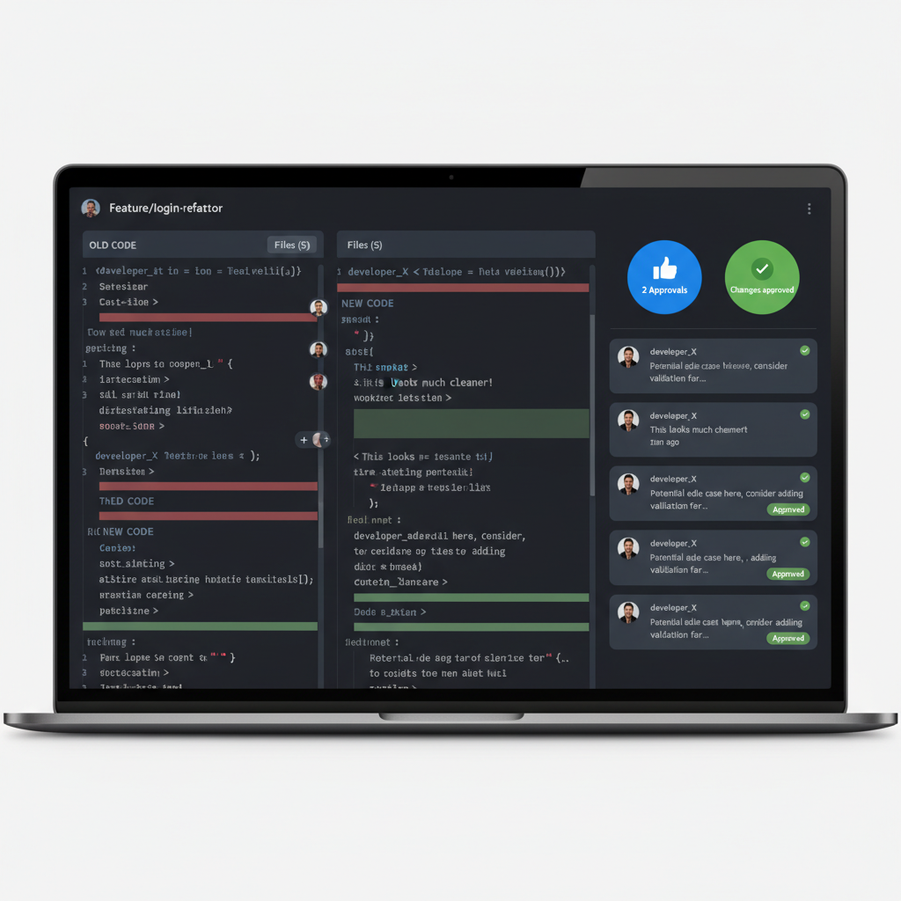

The AI coding agent that builds itself. Your code, your knowledge, your way. BYOK — bring your own LLM.
Get StartedAnalyzes its own code, identifies anti-patterns, and writes improvements. The agent that codes itself.
Virtual filesystem with search, tree view, and history. Everything organized, always.
20 built-in commands with tab completion. Full control from anywhere.
Visualize module dependencies, detect cycles, and optimize your build order.
Hierarchical configuration with layers: default → user → project → env → CLI.
Bring Your Own Key. OpenAI, Anthropic, Google, DeepSeek, Groq, Mistral, xAI.


